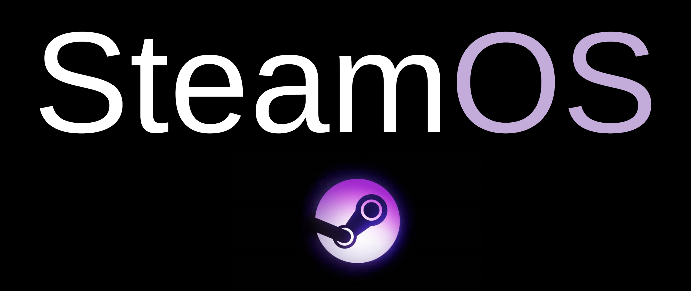
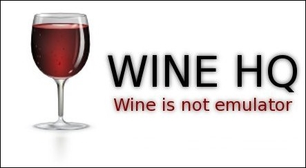
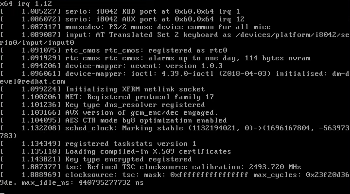

Nobara Project
El Proyecto Nobara es la nueva versión de Fedora Linux. Fedora es un
sistema operativo de estación de trabajo muy bueno, sin embargo,
cualquier cosa que involucre paquetes de terceros o propietarios
generalmente está ausente, Un usuario no familiarizado con Linux puede
tener dificultades para hacer que muchas cosas funcionen más allá del
navegador y los documentos de oficina que vienen con el sistema
operativo sin tener que tomarse un tiempo adicional para buscar
documentación.

Este proyecto tiene como objetivo corregir la mayoría de problemas de
la version anterior y ofrecer una mejor experiencia, buscando ser más
amigables con el usuario, y evitar que el mismo tenga que abrir la
terminal. No es que la terminal y/o el uso de la terminal sean algo
malo de ninguna manera, los usuarios avanzados son más que bienvenidos
a continuar usando la terminal, pero para los nuevos usuarios,
generalmente se espera algo similar a Windows.
Cabe aclarar que esta distribución -ES- una actualizacion de Fedora
Linux. Por lo que si deseas actualizar no perderas tus datos.

SteamOS es un sistema operativo realizado en colaboracion con Valve
basado en Linux. La base del sistema parte de una fusion entre Debian 8
y algunas dependencias de Fedora, al igual que una version exclusiva del
sistema de traduccion WINE para poder ejecutar algunas aplicaciones,
este sistema operativo fue desarrollado en exclusiva para las "STEAM
MACHINE" las cuales eran computadoras optimizadas para jugar en el
sistema de "STEAM", al ya no hacer este tipo de productos desde 2016 se
llego a un acuerdo con Valve y se libero el sistema para un uso general,
aun asi se utilizo una version mejorada y modificada de "Steam OS"
unicamente disponible en la nueva "Steam Deck". Nuestro trabajo se basa
en la sólida base del núcleo Debian y lo optimiza para su uso en el
salón. En su mayor parte es una plataforma Linux abierta la cual te da
control total. Puedes tomar las riendas de tu sistema e instalar nuevo
software o el contenido que quieras.
 Steam OS con escritorio "GNOME"
Steam OS con escritorio "GNOME"
Esta version del sistema operativo cuenta ahora con una tienda que
gestiona y busca automaticamente las dependencias para que el usuario
solamente se encargue de instalar las que necesite o vea necesarias en
el sistema, cuenta con un sistema de gestor de recursos el cual te
permite realizar tareas sencillas sin consumir recursos vitales y al
momento de jugar poder asignar los mismos para una mejor experiencia de
juego, contamos con diversos entornos graficos para que elijas el que
mas te guste, interfaz limpia, sencilla, sin blooatware y sin telemetria
para una mejor optimizacion de los recursos del sistema.
 Steam OS con escritorio oficial
Steam OS con escritorio oficial

Wine (acrónimo recursivo en inglés para Wine Is Not an Emulator, que
significa «Wine no es un emulador») es una reimplementación de la
interfaz de programación de aplicaciones de Win16 y Win32 para sistemas
operativos basados en Unix. Permite la ejecución de programas diseñados
para MS-DOS, y las versiones de Microsoft Windows 3.11, 95, 98, Me, NT,
2000, XP, Vista, 7, 8 y 10.
El nombre Wine inicialmente fue un acrónimo para WINdows Emulator. Este
significado fue cambiado posteriormente al acrónimo recursivo actual. El
doble significado deriva del hecho de que WINE es un emulador de API de
SOs, en contraposición a un entorno de máquina o un emulador de CPU.
Algunas personas no aplicarían el término emulador a lo que algunos
autores llaman un emulador de API porque la herramienta es realmente
una reimplementación de una API existente, no una forma de emular un
entorno de máquina completo.
Wine Provee:

- Un conjunto de herramientas de desarrollo para portar código fuente de
aplicaciones Windows a Unix.
- Un cargador de programas, el cual permite que muchas aplicaciones para
Windows 2.0/3.x/9X/ME/NT/2000/XP/Vista/7 y 8 se ejecuten sin modificarse
en varios sistemas operativos Unix como macOS, BSD y Unix-like como
GNU/Linux, Solaris, ademas en la ultima version se añadio el conjunto de
instrucciones de Proton para una mejor emulacion en juegos y asi obtener
estabilidad traduciendo al API Vulkan.
Compatibilidad Binaria :

- Soporte para programas de la familia MS-DOS y Windows
(3.x/9x/NT/2000/XP/2003/Vista/2008/7/8).
- Soporte para llamadas de funciones de Windows de 64, 32 y 16 bits.
- Código x86 de 64, 32 y 16 bits.
- Extensas bibliotecas de interrupciones para programas utilizando
llamadas de modo real INTxx.
- Capacidades avanzadas de trunking.
- Posibilidad de añadirle más bibliotecas de enlace dinámico (DLL),
incluso las nativas de Windows, las cuales están ubicadas en la carpeta
C:\Windows\System32, y pueden ser instaladas en wine copiando dichas
librerías en la carpeta ~/.wine/drive_c/windows/system32.
- Diseño de ingeniería inversa para mejorar la solución frente a errores.
- Ejecución sobre otras arquitecturas no Intel bajo emulación, con QEMU.
Gráficos y API

-
Puede dibujar en entornos gráficos basados en X11, SDL texto/ttydrv.
- Pantalla remota para cualquier terminal X.
- Soporte total de GDI y parcial GDI32.
- Soporte de DirectX para juegos.
-
Puede utilizar impresoras para sistemas Microsoft Windows de 16 bits
de forma nativa.
- Interfaz interna de impresión PostScript.
- Capacidad para metaarchivos.
- Capacidad para metaarchivos.
- Capacidad de ejecución en una o varias ventanas.
-
Posibilidad de instalar temas visuales de formato msstyle, los nativos
de Windows.
-
Diseñado para ser compatible con código para Windows de 32 bits.
- Programas de muestra
- Documentación generada automáticamente de las API
- Compilador fuente de 32 bits
- Capacidad parcial de codificación Unicode
- Internacionalización: Wine está disponible en 16 lenguas
- Depurador integrado y mensajes de rastreo configurables
- Proton